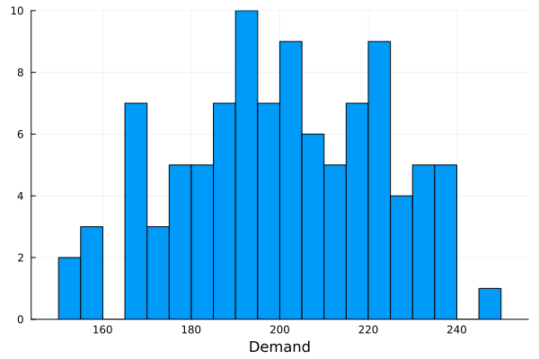
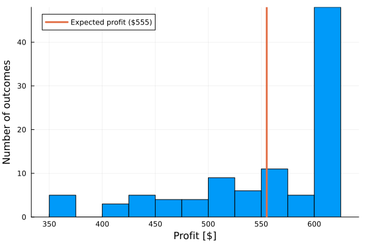
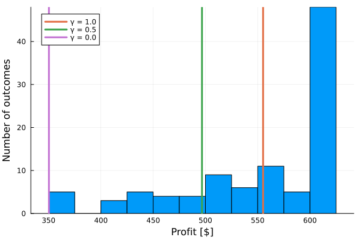
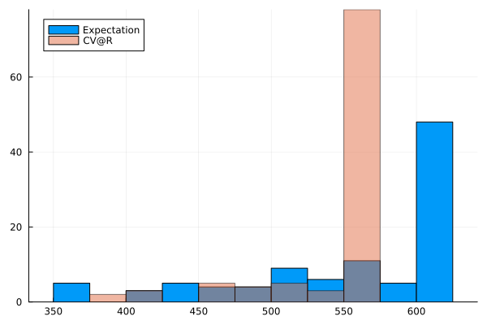

Two-stage stochastic programs
This tutorial was generated using Literate.jl. Download the source as a .jl file.
This tutorial demonstrates how to model and solve a two-stage stochastic program in JuMP using sample average approximation (SAA). It also shows how to add risk aversion to the model using the conditional value at risk (CVaR) measure.
Learning intentions:
- Formulate a two-stage stochastic program using sample average approximation: draw scenarios from a distribution, then build a single LP with second-stage variables indexed over all scenarios
- Compute the conditional value at risk (CVaR) at a given confidence level by formulating it as a linear program with auxiliary variables
- Combine the expected-profit objective and CVaR constraints into one model to directly optimize the risk-adjusted profit
Required packages
This tutorial uses the following packages:
using JuMPimport Distributionsimport HiGHSimport Plotsimport StatsPlotsimport StatisticsThe JuMP extension InfiniteOpt.jl can also be used to model and solve two-stage stochastic programs. The JuMP extension SDDP.jl can be used to model and solve multi-stage stochastic programs.
Background
During the week, you are a busy practitioner of Operations Research. To escape the drudgery of mathematics, you decide to open a side business selling creamy mushroom pies with puff pastry. After a few weeks, it quickly becomes apparent that operating a food business is not so easy.
The pies must be prepared in the morning, before you open for the day and can gauge the level of demand. If you bake too many, the unsold pies at the end of the day must be discarded and you have wasted time and money on their production. But if you bake too few, then there may be un-served customers and you could have made more money by baking more pies.
After a few weeks of poor decision making, you decide to put your knowledge of Operations Research to good use, starting with some data collection.
Each pie costs you $2 to make, and you sell them at $5 each. Disposal of an unsold pie costs $0.10. Based on three weeks of data collected, in which you made 200 pies each week, you sold 150, 190, and 200 pies. Thus, as a guess, you assume a triangular distribution of demand with a minimum of 150, a median of 200, and a maximum of 250.
We can model this problem by a two-stage stochastic program. In the first stage, we decide a quantity of pies to make $x$. We make this decision before we observe the demand $d_\omega$. In the second stage, we sell $y_\omega$ pies, and incur any costs for unsold pies.
We can formulate this problem as follows:
\[\begin{aligned} \max\limits_{x,y_\omega} \;\; & -2x + \mathbb{E}_\omega[5y_\omega - 0.1(x - y_\omega)] \\ & y_\omega \le x & \quad \forall \omega \in \Omega \\ & 0 \le y_\omega \le d_\omega & \quad \forall \omega \in \Omega \\ & x \ge 0. \end{aligned}\]
Sample Average approximation
If the distribution of demand is continuous, then our problem has an infinite number of variables and constraints. To form a computationally tractable problem, we instead use a finite set of samples drawn from the distribution. This is called sample average approximation (SAA).
D = Distributions.TriangularDist(150.0, 250.0, 200.0)N = 100d = sort!(rand(D, N));Ω = 1:NP = fill(1 / N, N);StatsPlots.histogram(d; bins = 20, label = "", xlabel = "Demand")
JuMP model
The implementation of our two-stage stochastic program in JuMP is:
model = Model(HiGHS.Optimizer)set_silent(model)@variable(model, x >= 0)@variable(model, 0 <= y[ω in Ω] <= d[ω])@constraint(model, [ω in Ω], y[ω] <= x)@expression(model, z[ω in Ω], 5y[ω] - 0.1 * (x - y[ω]))@objective(model, Max, -2x + sum(P[ω] * z[ω] for ω in Ω))optimize!(model)assert_is_solved_and_feasible(model)solution_summary(model)solution_summary(; result = 1, verbose = false)
├ solver_name : HiGHS
├ Termination
│ ├ termination_status : OPTIMAL
│ ├ result_count : 1
│ ├ raw_status : kHighsModelStatusOptimal
│ └ objective_bound : 5.55138e+02
├ Solution (result = 1)
│ ├ primal_status : FEASIBLE_POINT
│ ├ dual_status : FEASIBLE_POINT
│ ├ objective_value : 5.55138e+02
│ ├ dual_objective_value : 5.55138e+02
│ └ relative_gap : 6.14370e-16
└ Work counters
├ solve_time (sec) : 4.83513e-04
├ simplex_iterations : 42
├ barrier_iterations : 0
└ node_count : -1The optimal number of pies to make is:
value(x)205.09199195469637The distribution of total profit is:
total_profit = [-2 * value(x) + value(z[ω]) for ω in Ω]100-element Vector{Float64}:
350.29670349401135
354.1495502016528
363.8035115952282
364.79461402488766
371.8502960098368
412.77904717172737
417.09692482994717
421.92590316858355
428.0119911505151
430.6994526136026
⋮
615.2759758640891
615.2759758640891
615.2759758640891
615.2759758640891
615.2759758640891
615.2759758640891
615.2759758640891
615.2759758640891
615.2759758640891Let's plot it:
""" bin_distribution(x::Vector{Float64}, N::Int)A helper function that discretizes `x` into bins of width `N`."""bin_distribution(x, N) = N * (floor(minimum(x)/N):ceil(maximum(x)/N))plot = StatsPlots.histogram( total_profit; bins = bin_distribution(total_profit, 25), label = "", xlabel = "Profit [\$]", ylabel = "Number of outcomes",)μ = Statistics.mean(total_profit)Plots.vline!( plot, [μ]; label = "Expected profit (\$$(round(Int, μ)))", linewidth = 3,)plot
Risk measures
A risk measure is a function which maps a random variable to a real number. Common risk measures include the mean (expectation), median, mode, and maximum. We need a risk measure to convert the distribution of second stage costs into a single number that can be optimized.
Our model currently uses the expectation risk measure, but others are possible too. One popular risk measure is the conditional value at risk (CVaR).
CVaR has a parameter $\gamma$, and it computes the expectation of the worst $\gamma$ fraction of outcomes.
If we are maximizing, so that small outcomes are bad, the definition of CVaR is:
\[CVaR_{\gamma}[Z] = \max\limits_{\xi} \;\; \xi - \frac{1}{\gamma}\mathbb{E}_\omega\left[(\xi - Z)_+\right]\]
which can be formulated as the linear program:
\[\begin{aligned} CVaR_{\gamma}[Z] = \max\limits_{\xi, z_\omega} \;\; & \xi - \frac{1}{\gamma}\sum P_\omega z_\omega\\ & z_\omega \ge \xi - Z_\omega & \quad \forall \omega \\ & z_\omega \ge 0 & \quad \forall \omega. \end{aligned}\]
function CVaR(Z::Vector{Float64}, P::Vector{Float64}; γ::Float64) @assert 0 < γ <= 1 N = length(Z) model = Model(HiGHS.Optimizer) set_silent(model) @variable(model, ξ) @variable(model, z[1:N] >= 0) @constraint(model, [i in 1:N], z[i] >= ξ - Z[i]) @objective(model, Max, ξ - 1 / γ * sum(P[i] * z[i] for i in 1:N)) optimize!(model) assert_is_solved_and_feasible(model) return objective_value(model)endCVaR (generic function with 1 method)When γ is 1.0, we compute the mean of the profit:
cvar_10 = CVaR(total_profit, P; γ = 1.0)555.1382515799954Statistics.mean(total_profit)555.1382515799957As γ approaches 0.0, we compute the worst-case (minimum) profit:
cvar_00 = CVaR(total_profit, P; γ = 0.0001)350.29670349401135minimum(total_profit)350.29670349401135By varying γ between 0 and 1 we can compute some trade-off of these two extremes:
cvar_05 = CVaR(total_profit, P; γ = 0.5)496.6966890260083Let's plot these outcomes on our distribution:
plot = StatsPlots.histogram( total_profit; bins = bin_distribution(total_profit, 25), label = "", xlabel = "Profit [\$]", ylabel = "Number of outcomes",)Plots.vline!( plot, [cvar_10 cvar_05 cvar_00]; label = ["γ = 1.0" "γ = 0.5" "γ = 0.0"], linewidth = 3,)plot
Risk averse sample average approximation
Because CVaR can be formulated as a linear program, we can form a risk averse sample average approximation model by combining the two formulations:
γ = 0.4model = Model(HiGHS.Optimizer)set_silent(model)@variable(model, x >= 0)@variable(model, 0 <= y[ω in Ω] <= d[ω])@constraint(model, [ω in Ω], y[ω] <= x)@expression(model, Z[ω in Ω], 5 * y[ω] - 0.1(x - y[ω]))@variable(model, ξ)@variable(model, z[ω in Ω] >= 0)@constraint(model, [ω in Ω], z[ω] >= ξ - Z[ω])@objective(model, Max, -2x + ξ - 1 / γ * sum(P[ω] * z[ω] for ω in Ω))optimize!(model)assert_is_solved_and_feasible(model)When $\gamma = 0.4$, the optimal number of pies to bake is:
value(x)184.27385448071087The distribution of total profit is:
risk_averse_total_profit = [value(-2x + Z[ω]) for ω in Ω]bins = bin_distribution([total_profit; risk_averse_total_profit], 25)plot = StatsPlots.histogram(total_profit; label = "Expectation", bins = bins)StatsPlots.histogram!( plot, risk_averse_total_profit; label = "CV@R", bins = bins, alpha = 0.5,)plot
Next steps
- Try solving this problem for different numbers of samples and different distributions.
- Refactor the example to avoid hard-coding the costs. What happens to the solution if the cost of disposing unsold pies increases?
- Plot the optimal number of pies to make for different values of the risk aversion parameter $\gamma$. What is the relationship?